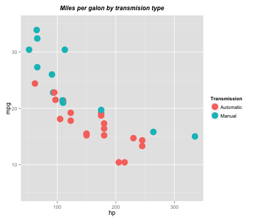
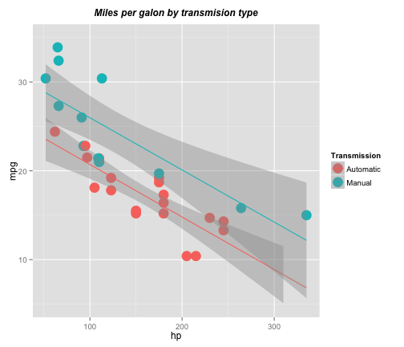

This shiny app allows to conduct an exploratory analysis over a dataset of cars to explore the relationship between car’s transmission and miles per gallon (mpg) taking into consideration the potential influence of other variables

Ignacio Reboredo
This shiny app allows to conduct an exploratory analysis over a dataset of cars to explore the relationship between car’s transmission and miles per gallon (mpg) taking into consideration the potential influence of other variables
The sidebar panel allows to chose:


